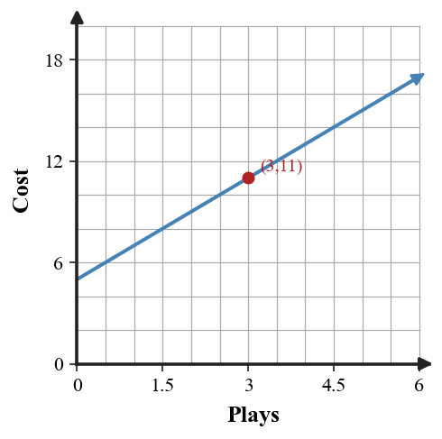

A source-grounded study guide for vocabulary, rules and relationships, section targets, representations, common misconceptions, and reasoning across DOK levels.
Unit at a Glance
What ties Unit 1 together?
Students will represent and interpret relationships by connecting tables, graphs, equations, and contexts that model the same situation.
1RepresentConnect tables, graphs, equations, and contexts.
→
2FunctionTrack inputs, outputs, and rules.
→
3ClassifyRecognize families and expression structure.
→
4ModelWrite equations and interpret solutions.
Unit Vocabulary & Representations
Words and representations worth knowing cold
These source-supported terms and representation types organize the work across the unit.
1.1 Multiple Representations of Relationships
Tables of input-output pairsCoordinate graphsEquations and rulesVerbal contextsConnections among multiple representations
1.2 Inputs, Outputs, and Functions
Input-output tablesFunction rulesOrdered pairsMapping diagramsContext-based input and output quantities
1.3 Function Families
Linear patternsQuadratic patternsExponential growth and decay patternsAbsolute value patternsFamily features across representations
1.4 Expressions and Structure
Algebraic expressionsEquivalent formsGrouped terms and factorsContext meanings for termsSubstitution checks
1.5 Equations as Models
Context-based equationsSolution stepsVariables as quantitiesBalanced relationshipsInterpreted solutions
Rules, Forms & Relationships
The structures Unit 1 expects you to use
Use these relationships only in the situations where their structure applies. The section review below shows how they connect to representations and contexts.
Ordered pair
$(x,y)$
Coordinates connect an input with its matching output in tables and graphs.
Function notation
$y=f(x)$
A function rule assigns one output to each allowed input.
Linear family
$y=mx+b$
Linear relationships show constant additive change and a straight-line graph.
Quadratic family
$y=ax^2+bx+c$
Quadratic relationships have curved parabolic graphs and changing first differences.
Exponential family
$y=ab^x$
Exponential relationships use repeated multiplication or a constant ratio.
Absolute-value family
$y=a|x-h|+k$
Absolute-value graphs have a V-shaped structure with a turning point.
Distributive structure
$a(b+c)=ab+ac$
Distribution and factoring are reverse ways to reveal equivalent expression structure.
Equation balance
$A=B\Rightarrow A+c=B+c$
Equivalent operations on both sides preserve equality.
Students will connect tables, graphs, equations, and contexts that represent the same relationship.
I can…
I can construct a table, graph, equation, or context from another representation of the same relationship.
I can use features in one representation to work with a related table, graph, equation, or context.
I can determine whether two representations belong to the same relationship using evidence from values, rates, or patterns.
Summary
A relationship can be shown with words, a table, an equation, or a graph, but the input-output pattern should stay consistent. When you move between representations, keep the same quantities and the same order of operations.
The starting value is the output when the input is 0, and the repeated change tells how much the output changes each step. Tables and graphs make both features visible.
A common error is switching the starting value and the repeated change when writing an equation.
Strong understanding means you can create a representation, explain what each number means, and use another representation to check that your model agrees with the context.

Table, equation, and graph for one relationship.
Key representations:Tables of input-output pairsCoordinate graphsEquations and rulesVerbal contextsConnections among multiple representations
DOK 1
Recognize and interpret tables of input-output pairs and the basic features used in this section.
DOK 2
use features in one representation to work with a related table, graph, equation, or context
DOK 3
determine whether two representations belong to the same relationship using evidence from values, rates, or patterns
DOK 4
Build a graph from a context about distance, cost, or time.
Common traps to avoid
Reversing input and output
Why it is tempting: both quantities appear in the context. What to check instead: which quantity is chosen first and which quantity depends on it.
Switching start and change
Why it is tempting: both numbers are important. What to check instead: the value at input 0 before writing the multiplier.
Graphing points out of order
Why it is tempting: tables list pairs close together. What to check instead: each x-value matched with its own output.
Writing a rule from one point only
Why it is tempting: one point feels like enough evidence. What to check instead: the repeated change across multiple rows.
Students will interpret functions as rules that connect inputs and outputs without relying on formal domain and range language.
I can…
I can formulate a rule that connects inputs to outputs in a table, graph, equation, or context.
I can apply an input-output rule to generate missing values and ordered pairs.
I can assess whether a rule gives one output for each input in a situation.
Summary
A function rule connects an input to an output. Function notation such as $f(3)$ asks for the output when the input is 3.
You can use a rule by substituting an input, completing a table, writing an ordered pair, or setting the rule equal to a target output.
A common error is treating a repeated input with two different outputs as acceptable.
Strong understanding means you can explain the role of each quantity and check whether the rule gives one output for each input in a table, graph, equation, or context.
Input-output rule and function reasoning.
Key representations:Input-output tablesFunction rulesOrdered pairsMapping diagramsContext-based input and output quantities
DOK 1
Recognize and interpret input-output tables and the basic features used in this section.
DOK 2
apply an input-output rule to generate missing values and ordered pairs
DOK 3
assess whether a rule gives one output for each input in a situation
DOK 4
Build a function rule from repeated input-output calculations.
Common traps to avoid
Reading $f(3)$ as multiplication
Why it is tempting: the parentheses look like multiplication notation. What to check instead: that $3$ is the input to the rule.
Mixing table columns
Why it is tempting: all values are close together. What to check instead: each input-output pair one column at a time.
Forgetting a target-output equation
Why it is tempting: students keep substituting inputs. What to check instead: whether the output or the input is unknown.
Allowing repeated-input conflicts
Why it is tempting: repeated outputs are allowed. What to check instead: whether one input has two different outputs.
Students will recognize common function families from graphs, tables, equations, and contexts.
I can…
I can design examples of linear, quadratic, exponential, and absolute value relationships using more than one representation.
I can extend patterns in tables, graphs, equations, and contexts to work with common function families.
I can critique a proposed function family choice using evidence from rate of change, shape, or equation structure.
Summary
Function families can be recognized by patterns that appear in tables, graphs, equations, and contexts. The goal is to use evidence, not just guess from appearance.
Linear relationships have constant first differences, quadratic relationships often have constant second differences, exponential relationships have repeated ratios, and absolute value relationships have V-shaped distance patterns.
A common error is choosing a family from the graph shape without checking values or equation structure.
Strong understanding means you can identify a likely family, explain the evidence, and critique a mismatch when one representation does not agree with another.
Common function families across graphs.
Key representations:Linear patternsQuadratic patternsExponential growth and decay patternsAbsolute value patternsFamily features across representations
DOK 1
Recognize and interpret linear patterns and the basic features used in this section.
DOK 2
extend patterns in tables, graphs, equations, and contexts to work with common function families
DOK 3
critique a proposed function family choice using evidence from rate of change, shape, or equation structure
DOK 4
Create a context that fits a given family feature.
Common traps to avoid
Shape-only matching
Why it is tempting: graphs are fast to scan. What to check instead: a table pattern or equation clue.
Calling any curve exponential
Why it is tempting: curves can look similar. What to check instead: repeated ratios or variable-in-exponent structure.
Missing second differences
Why it is tempting: first differences are easier to compute. What to check instead: whether the changes in the changes are constant.
Ignoring a single mismatch
Why it is tempting: most values may fit. What to check instead: each listed input-output pair against the rule.
Students will interpret and rewrite algebraic expressions by identifying structure, meaning, and equivalent forms.
I can…
I can build equivalent expressions by using structure, grouping, and properties of operations.
I can apply rewriting strategies to make the meaning of an expression easier to work with.
I can determine whether two expressions are equivalent by using structure, substitution, or properties.
Summary
Expressions have structure: terms, coefficients, constants, factors, and groups all communicate meaning. Rewriting an expression should preserve the same value.
Combining like terms, distributing, factoring a repeated group, and substitution checks are tools for working with equivalent forms. Each form can reveal a different feature.
A common error is combining terms that are not like terms or distributing to only one term inside parentheses.
Strong understanding means you can rewrite accurately, explain why the forms are equivalent, and connect parts of an expression to a context.
Area model revealing expression structure.
Key representations:Algebraic expressionsEquivalent formsGrouped terms and factorsContext meanings for termsSubstitution checks
DOK 1
Recognize and interpret algebraic expressions and the basic features used in this section.
DOK 2
apply rewriting strategies to make the meaning of an expression easier to work with
DOK 3
determine whether two expressions are equivalent by using structure, substitution, or properties
DOK 4
Build an expression for a cost, perimeter, or repeated quantity.
Common traps to avoid
Combining unlike terms
Why it is tempting: all terms are in one expression. What to check instead: the variable part and exponent before combining.
Partial distribution
Why it is tempting: students multiply the first term and stop. What to check instead: every term inside parentheses.
Losing a constant
Why it is tempting: constants look small. What to check instead: fixed amounts after each rewrite step.
Checking only by appearance
Why it is tempting: forms can look different. What to check instead: a structural reason or substitution check.
Students will write, solve, and interpret equations that model situations.
I can…
I can construct an equation that models a situation using meaningful quantities and operations.
I can use solution steps to solve an equation and connect the result to the situation.
I can predict whether a solution is reasonable by interpreting it in the original context.
Summary
Equations model situations by showing two quantities that are equal. Solving finds the value of the variable that makes the equality true.
A good equation defines the variable, represents fixed and repeated amounts, and uses balanced steps to solve. Checking substitutes the solution back into the equation.
A common error is solving correctly but forgetting to interpret the answer in the context.
Strong understanding means you can write the equation, solve it, check it, and explain why the solution is reasonable for the original situation.
Context connected to an equation model.
Key representations:Context-based equationsSolution stepsVariables as quantitiesBalanced relationshipsInterpreted solutions
DOK 1
Recognize and interpret context-based equations and the basic features used in this section.
DOK 2
use solution steps to solve an equation and connect the result to the situation
DOK 3
predict whether a solution is reasonable by interpreting it in the original context
DOK 4
Formulate an equation from a real-world situation.
Common traps to avoid
Skipping substitution checks
Why it is tempting: the answer feels finished after solving. What to check instead: the solution in the original equation.
Forgetting the fixed amount
Why it is tempting: the per-unit part is easier to see. What to check instead: one-time costs or starting quantities.
Unbalanced steps
Why it is tempting: students change only one side. What to check instead: that every operation is applied to both sides.
Answer without units
Why it is tempting: the number is algebraically correct. What to check instead: what the variable represents.
Unit Mastery by DOK
A second way to organize the review
Sections tell you which topic you are reviewing. DOK tells you how deeply you need to use it.
DOK 1 · Recognize
Control notation and basic features
Recognize the key features and notation used in Multiple Representations of Relationships.
Recognize the key features and notation used in Inputs, Outputs, and Functions.
Recognize the key features and notation used in Function Families.
Recognize the key features and notation used in Expressions and Structure.
Recognize the key features and notation used in Equations as Models.
DOK 2 · Apply & Represent
Use procedures and representations
use features in one representation to work with a related table, graph, equation, or context.
apply an input-output rule to generate missing values and ordered pairs.
extend patterns in tables, graphs, equations, and contexts to work with common function families.
apply rewriting strategies to make the meaning of an expression easier to work with.
use solution steps to solve an equation and connect the result to the situation.
DOK 3 · Reason & Critique
Use evidence to defend or revise
determine whether two representations belong to the same relationship using evidence from values, rates, or patterns.
assess whether a rule gives one output for each input in a situation.
critique a proposed function family choice using evidence from rate of change, shape, or equation structure.
determine whether two expressions are equivalent by using structure, substitution, or properties.
predict whether a solution is reasonable by interpreting it in the original context.
DOK 4 · Design & Synthesize
Build and connect models
Build a graph from a context about distance, cost, or time.
Build a function rule from repeated input-output calculations.
Create a context that fits a given family feature.
Build an expression for a cost, perimeter, or repeated quantity.
Formulate an equation from a real-world situation.
Before the Summative
Can you do these without notes?
Vocabulary & Concepts
Multiple Representations of Relationships
Inputs, Outputs, and Functions
Function Families
Expressions and Structure
Equations as Models
Representations & Procedures
use features in one representation to work with a related table, graph, equation, or context.
apply an input-output rule to generate missing values and ordered pairs.
extend patterns in tables, graphs, equations, and contexts to work with common function families.
apply rewriting strategies to make the meaning of an expression easier to work with.
use solution steps to solve an equation and connect the result to the situation.
Reasoning & Modeling
determine whether two representations belong to the same relationship using evidence from values, rates, or patterns.
assess whether a rule gives one output for each input in a situation.
critique a proposed function family choice using evidence from rate of change, shape, or equation structure.
determine whether two expressions are equivalent by using structure, substitution, or properties.
predict whether a solution is reasonable by interpreting it in the original context.
Strong Algebra work connects procedures to structure, checks representations against one another, and explains why the result fits the mathematical situation.